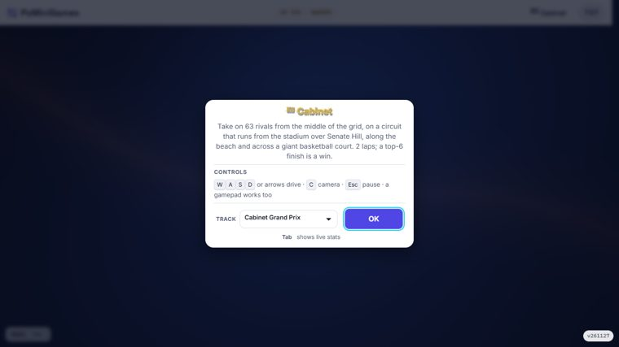
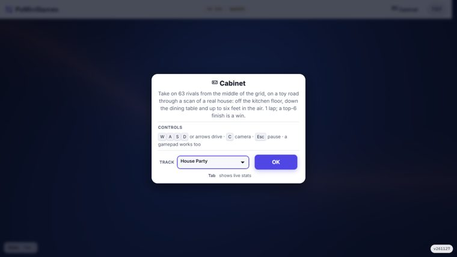
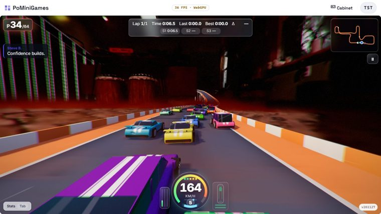
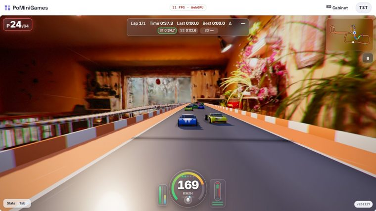
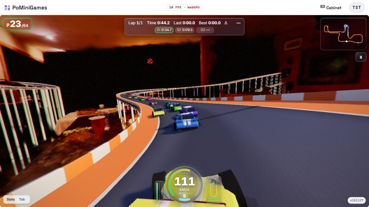
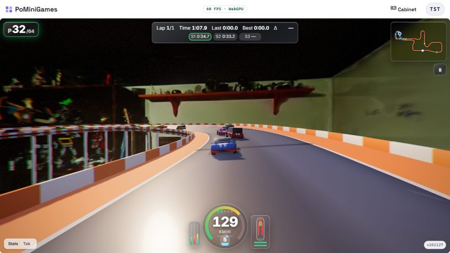
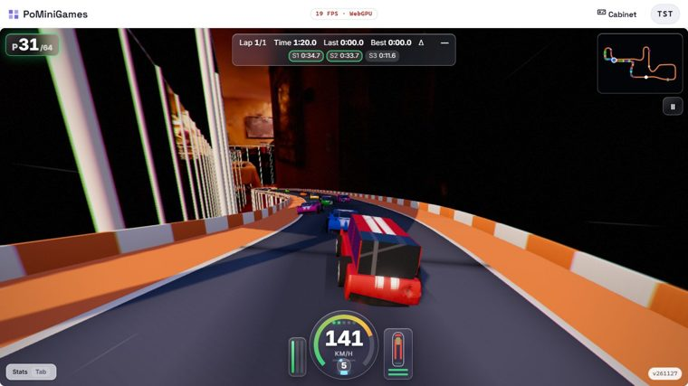
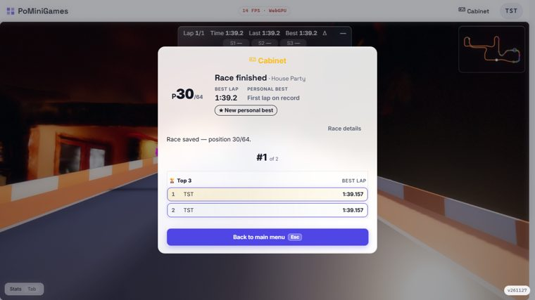

PoCabinet: House Party, a second track through a scanned house
2026-11-27. Headless Chromium on WebGPU, high tier, 1366x768, the player's car on the demo autopilot.
- Before: one circuit (Cabinet Grand Prix); the 1P start card had no track choice.
- After: the 1P start card has a Track dropdown. House Party is one lap of a toy road on stilts through a 2M-splat scan of a house, from the kitchen floor to six feet up in the bedroom. Online races stay on the Grand Prix.
- The Grand Prix's road draws black in these runs with or without this change (it does so on the commit before it too).







